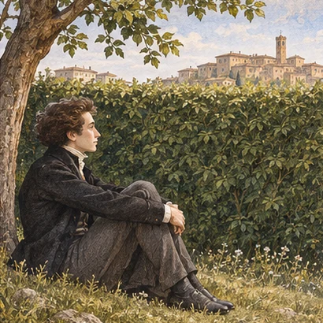

Italiano · Classe seconda
Come si legge
una poesia?
Dalla forma all’Infinito di Leopardi
Un poeta siede davanti a una siepe. Quindici versi dopo naufraga in un mare. Che cosa è accaduto, se è rimasto sullo stesso colle?
Inizia la prima lezione →
Le otto lezioni
- 01
IntroduzioneChe cos’è la poesia?Che cosa cambia quando cambia l’ordine delle parole?
- 02
La formaIl verso e l’endecasillaboChe cosa hanno in comune un endecasillabo piano, uno tronco e uno sdrucciolo?
- 03
La formaLe figure retoricheCome fanno le parole a farci vedere o sentire qualcosa?
- 04
Le forme poeticheSonetto, terzine e idillioChe cosa tiene insieme i versi di una poesia?
- 05
L’immagine del mondoL’immagine del mondoPerché la Natura appare benigna al giovane Leopardi?
- 06
La poeticaLa poetica del vago e dell’indefinitoPerché una veduta incompleta può far immaginare di più?
- 07
Il testo · LetturaL’infinito di LeopardiChe cosa accade a chi rimane seduto davanti alla siepe?
- 08
Il testo · InterpretazioneDalla siepe al mareCom’è possibile naufragare restando sullo stesso colle?